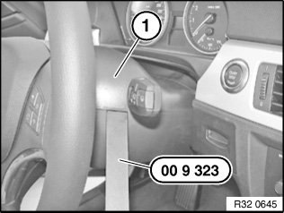
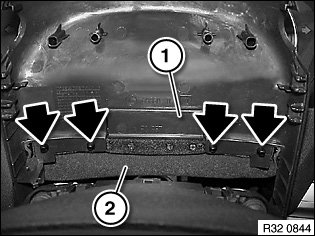

32 31 003 Removing and Installing/Replacing Upper Section of Steering Column Trim
32 31 003 Removing and installing/replacing upper section of steering column trimSpecial tools required:
Important!
Disconnecting the plug connection for the hands-free microphone or emergency SOS call button results in fault memory entries in the telephone control unit (limitation in the emergency SOS call system).

After installation:
^ Read out fault memory and delete entries
Move steering column in "bottom" and "extended" position.
Important!
Risk of damage!
Unclip steering column trim (1) at side with special tool 00 9 323.

Tilt steering column trim (1) towards front.
Unclip steering column gap cover (2) from steering column trim.
Installation:
Tilt steering column trim towards rear, align by way of locks to lower section (of steering column trim) and press down.
Replacement:
^ E88, E93: Remove hands-free microphone from steering column trim.